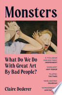

- Monsters 📚
- by
- Publication date: 2023-05-11
- Read: Apr 7, 2026
- Link

I was really curious about this book as the topic of enjoying art made by people who express world views very counter to my own is something I often think about. It’s one of the reasons why I was intrigued by and enjoyed Bad Feminist when I read it, with its discussion of enjoying rap music - which often has very questionable lyrics to say the least - while being a feminist.
There are countless more examples like this, but I was generally interested in reading a more detailed discussion about the topic. And to be honest I was secretly hoping for the book to tell me how to resolve those dilemmas, “to hand me a calculator” - as the author calls it - that gives me a result whether I’m allowed to enjoy some art or not. But obviously that’s not how it’s going. The author discusses fairly in depth the problematic lives and behaviours of a number of authors and explores the spectrum of “monstrosity” and the question when the threshold is crossed. And one of the most interesting perspectives for me was this notion of how viewing of art is influenced by the artist as well as the audience:
Consuming a piece of art is two biographies meeting: the biography of the artist that might disrupt the viewing of the art; the biography of the audience member that might shape the viewing of the art. - p. 80
And also the discussion of what consuming art says about oneself (or any other person for that matter). Especially given the very limited influence one has as a consumer on how things go with the author of the art:
The way you consume art doesn’t make you a bad person, or a good one. You’ll have to find some other way to accomplish that. - p. 242
Obviously this topic is extremely nuanced and cases of artists being or turning out to be “monsters” vary wildly. And while the book didn’t give me the hand holding guide I was initially hoping for, it definitely gave me more to think about on this topic.